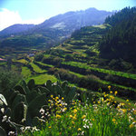

Por medianías se conoce la parte de la isla por encima de los 600 metros y por debajo de los 1500 metros, límite superior del mar de nubes,el efecto más visible de los vientos alisios. La humedad que aportan ha favorecido la configuración de un paisaje caracterizado por el mosaico de pequeñas y medianas explotaciones agrícolas situadas entre riscos y profundos barrancos.
| Dificultad | Media |
|---|---|
| Duración | 2h 20min |
| Material necesario | Calzado cómodo y gorra |
| Mejor época | Invierno |
El inicio del itinerario tiene lugar en la estación de la guagua de San Mateo,junto al espacio utilizado por el mercadillo semanal. Dejando la marquesina de la parada de guagua a nuestra izquierda, nos dirigimos al oeste, hacia la intersección de la carretera GC-41, y giramos a la izquierda. Pasamos junto al Centro de Salud San Mateo y tomamos la Calle del Cantillo, que se bifurca hacia la izquierda. Por esta calle, que se estrecha a medida que se encara a la montaña, cruzamos el barranco de la Higuera.
La calle se bifurca y continuamos por la derecha, en dirección VALSEQUILLO POR EL HELECHAL, por una calle que progresivamente se va empinando. Al final de la calle, una vez ya hemos salido de la población, continuamos por un camino que, mediante varios zigzags, sigue ganando altura.
Nos unimos a una carretera asfaltada por la que continuamos subiendo, manteniendo a la izquierda las amplias panorámicas de la zona de San Mateo en un primer plano, aunque a medida que avanzamos la vista se extiende hacia Santa Brígida, Teror e incluso Las Palmas de Gran Canaria.
En la parte alta del cordal encontramos una bifurcación donde continuamos hacia la derecha, en dirección a Los Cardos.A partir de este punto y mientras caminamos por el cordal del Montañón ampliamos las vistas por todas las Medianías, tanto en el sector de San Mateo y Santa Brígida como en el de Valsequillo. También en el momento en que iniciamos el descenso, la panorámica llega hasta la costa, sobresaliendo la ciudad de Las Palmas al NE y Telde al Este.
Al llegar a un desvío, giramos a la derecha, siguiendo por la carretera asfaltada en dirección VALSEQUILLO, que se aleja del cordal. La carretera realiza una curva de 180º hacia la izquierda, pero seguimos recto, primero por una pista pero después por un camino, que enseguida bajará al valle mediantes múltiples lazadas. Cruzamos una pista hormigonada y el camino va a continuar junto a las tuneras.
No obstante, al final, nos unimos a una carretera asfaltada.Será en el punto donde nos topemos con señal en dirección a San Mateo que se encara a la pendiente. Desde este punto, la panorámica está dominada por la gran dorsal de la Cumbre de Gran Canaria entre la que identificamos el Roque Saucillo, gran roca que sobresale en la parte alta de la cumbre, y delante de nosotros, el Roque Grande, de forma piramidal. Entre las dos montañas se encuentra el vecindario del Rincón de Tenteniguada y más abajo el pueblo de Tenteniguada. Enfrente se sitúa el pueblo de La Vega.
Al final de esta bajada, giramos hacia la izquierda dirección VALSEQUILLO por un tramo que llanea.